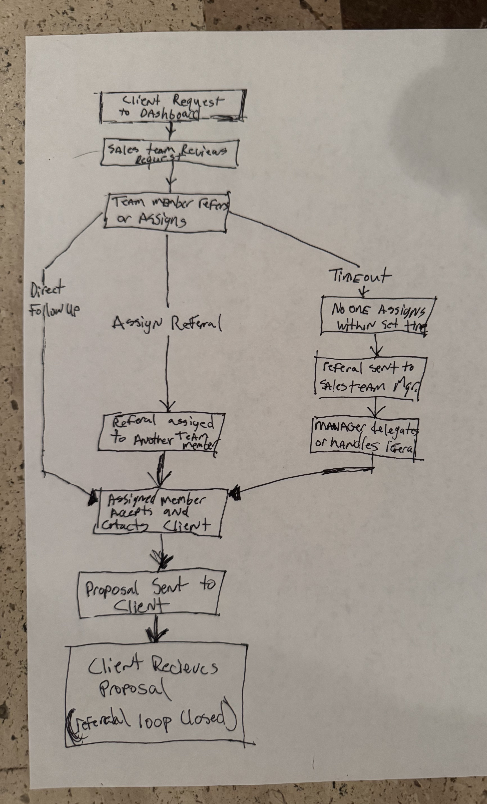
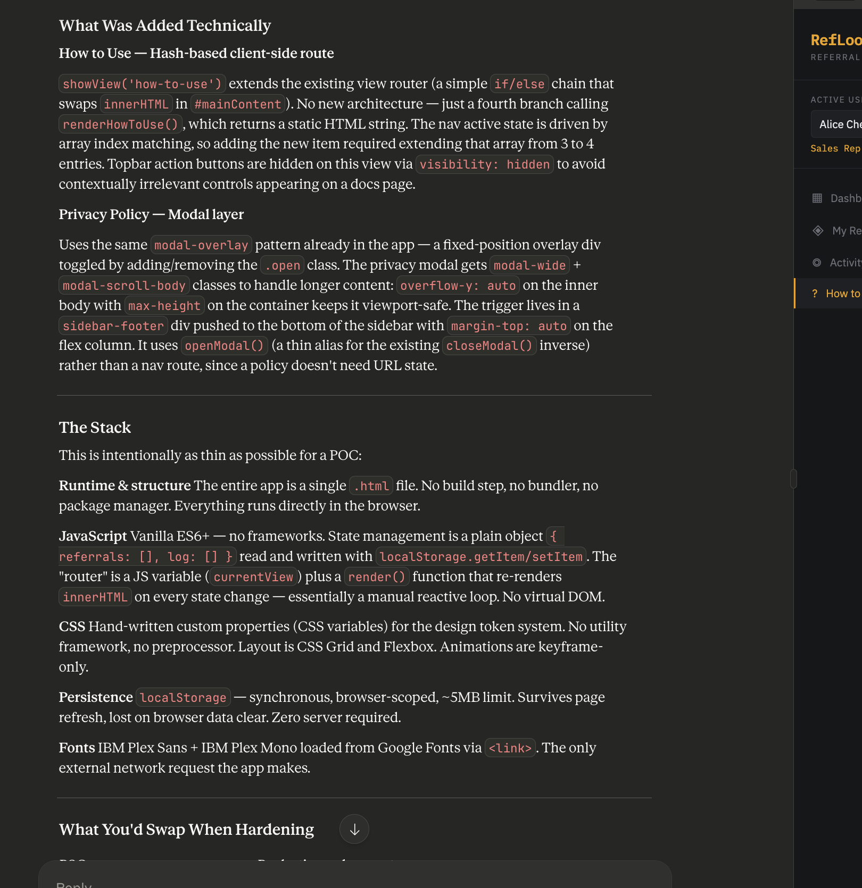

Module 7
Due: 3.12.2026
1. Write an approximately 4,000 word paper comparing Gantt charts and PERT diagrams. Use AI to help. You can count words by pasting it into MS Word and it should show the word count in the lower left corner of the window. The result should be well structured, with numbered section, subsection, and if appropriate sub-subsection or deeper headings, and have a table of contents showing the headings and their numbers. It is not necessary to have links from the table of contents to the corresponding sections, but this might be added to this question next year.
One of the most insightful parts of this assignment was watching how different AI models struggled with the sheer scale of a 4,000-word requirement. It exposed a common weakness in generative AI: the tendency to 'compress' complex ideas once the document gets long. I noticed that ChatGPT would often claim it had hit the word count while only providing about half of what was asked. It was aware of the goal, but couldn't quite bridge the gap. Gemini was the standout here, proving it could actually sustain a deep, technical narrative for the duration of the project. It really highlighted that for long-form academic work, 'length hallucination' is a hurdle we still have to actively audit.
2. Answer this question only if you have an opinion about it, otherwise just say you have no opinion on it. Suppose a HW required you to make and submit a short cat video. What product/method/service/process would you choose?
While I don't have a favorite tool for this purpose, I have seen promise in ClipChamp. It is a cloud based video editor operated by Microsoft with copilot integration. As a demo, I create the following video with this prompt "Create a 20-30 Second video on why clipchamp is the best choice for students needing to create short form video assignments with minimal technical knowledge." Here is the result: Video (Requires UALR Login)
3. Make an improvement to your sandbox, using AI. Then, tweak something (it can be a small thing) yourself. Explain what you did as the answer to this question.
After making improvements to my sandbox for homework 6, I noticed
that I was seeing some of the underlying code in the preview window.
Working with Claud, I identified the issue and updated the
UpdatePreview() function to address this issue. I also
increased the size of the logo manually by adjusting the CSS.
4. For your HTML and JavaScript demo page, add one more button demonstrating a JavaScript operator. Alphabetize the JavaScript section by what is on the buttons. Make sure the HTML section is alphabetized as well. Give a link to it as the answer to this question.
5. Consider the use cases developed in the previous HW. Make a hand-drawn Gantt or PERT chart for developing the project. Take a snapshot of the hand-drawn diagram and upload it to your website so you can include it in your HW.

6. Referring to the previous question, you already have a home page from the previous HW for a system based on the use cases of the previous HW. Add 2-3 more pages and link to them from the home page of the system. You can use AI to help. Include use of both HTML and JavaScript. In your HW statement provide a link to the system's home page (that might be obvious, but we mention it anyway). Also in your HW statement include a screenshot of you interacting with an AI to better understand how a JavaScript passage in your website works.
I added a new route in the app to display step by step instructions and added a link in the footer to a privacy policy.

Revised app with additions